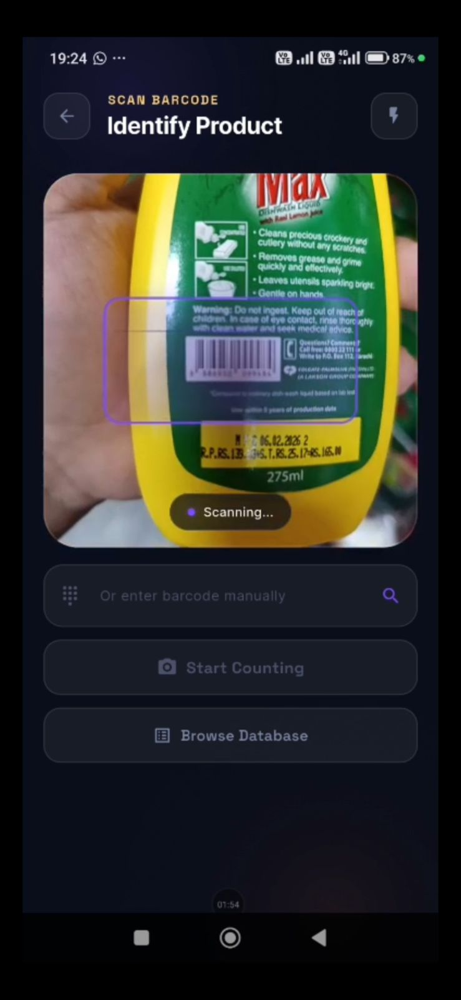
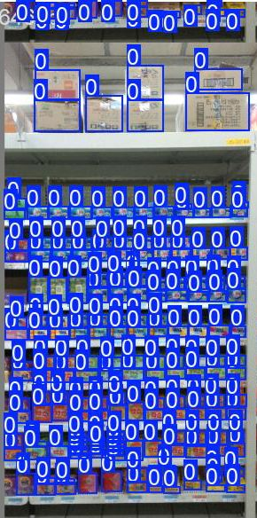

93.2%
YOLOv8 Detection Accuracy
<140ms
Processing per Image
0
Special Hardware Required
ERP
SAP & Dynamics Ready
Project Overview
Inventray is an AI-powered inventory platform that eliminates manual stock counting. Using any modern smartphone or tablet, Inventray One scans a shelf or warehouse, identifies every product using computer vision, estimates depth and spatial structure in 3D, and delivers structured inventory data ready to be pushed directly into any ERP system — in under 140ms per image.
The Problem It Solves
- Manual counting is slow and error-prone
- Barcode scanners require special MDE hardware
- Stock errors cause lost revenue and overstock waste
- Frequent recounts tie up staff and resources
Key Features
- Works on any modern smartphone — no special hardware
- Real-time processing under 140ms per image
- Confidence scoring flags uncertain counts
- 3D detection for stacked/overlapping items
- Full audit trail with timestamp and device ID
Product Screenshots

Scanning Interface

Results & Analytics

Analytics Dashboard

AI Detection View
AI Processing Pipeline
Camera Scan
Shelf or warehouse captured via smartphone
Object Detection
YOLOv8 identifies individual products at 93.2%
3D Depth
MiDaS v3 analyzes depth & spatial structure
3D Fusion
Intelligent 2D + 3D data merging
ERP Output
Structured JSON data for your system
Technical Stack
Core Technologies
- Mobile: React Native / Flutter (iOS & Android)
- Backend: FastAPI + PyTorch + TorchServe
- AI Models: YOLOv8 (detection) + MiDaS v3 (depth)
- Cloud: Docker-based, horizontally scalable
- API: API-first design, ERP-agnostic JSON output
ERP Compatibility
Industries & Use Cases
Retail
Shelf inventory in supermarkets and retail chains — fast, precise, no downtime needed during store hours.
Warehouse & Logistics
Stock capture in logistics centers and distribution warehouses — entire aisles scanned in minutes instead of hours.
Gastronomy
Ingredients, walk-in coolers, and storage rooms — reduce spoilage, improve transparency, and cut prep time.
Industry
Volume measurement for bulk goods, liquids, and irregular-shaped materials using 3D spatial understanding.
Code Sample — Inventory Event
// Example ERP Output — Structured Inventory Event (JSON)
{
"event_type": "INVENTORY_SCAN",
"timestamp": "2025-04-25T14:32:10Z",
"device_id": "INV-PHONE-001",
"location": "Shelf A3 – Cold Aisle",
"items": [
{
"product_id": "SKU-98231",
"name": "Whole Milk 1L",
"count": 14,
"confidence": 0.97,
"detection_method": "YOLOv8_2D+MiDaS_3D"
},
{
"product_id": "SKU-44812",
"name": "Greek Yogurt 500g",
"count": 8,
"confidence": 0.88,
"detection_method": "YOLOv8_2D+MiDaS_3D",
"flag": "LOW_CONFIDENCE"
}
],
"scan_duration_ms": 137,
"erp_target": "SAP_S4HANA"
}Results from Real Test Scenarios
Measured Performance
Business Impact
- Eliminates manual counting labor costs entirely
- Reduces stock errors and associated revenue losses
- No hardware procurement — uses existing devices
- Audit-trail compliance out of the box